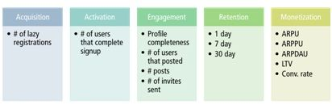
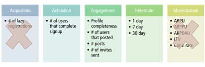
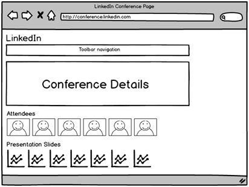

Answers
What metrics will you look at to evaluate success of a product?
INTERVIEWER: LinkedIn is testing a new feature: asking a new user to upload their profile photo during the signup phase. Currently, a new user is asked to upload a profile photo after the sign-up process. What metrics will you look at to evaluate success of a product?
CANDIDATE: Give me a moment to collect my thoughts.
Candidate writes the following on the whiteboard

CANDIDATE: Here are the metrics that I would consider: acquisition, activation, engagement, retention, and monetization.
For acquisition, we might track the number of lazy registrations.
For activation, we might look at the number of people that complete the entire signup process.
For engagement, we might look at a variety of metrics including profile completeness, the number of users that posted, the number of posts they make, and the number of invites sent.
For retention, I’d look at how often they return to our site within single-, 7- and 30-day windows.
Lastly, for monetization, I’d consider a few different metrics including:
Candidate crosses out Acquisition and Monetization boxes

CANDIDATE: To help us maintain focus, we don’t need to track the number of lazy registrations because this feature change doesn’t affect the lazy registration process. And for similar reasons, we don’t need to worry about monetization metrics.
INTERVIEWER: Okay, let’s continue to the next step: you run the upload profile feature in signup flow feature for a two-week A/B test. Here are the results:
| Lift | P-Value | |
|---|---|---|
| Number of users completing signup | -13.21 percent | 0.02 |
| Profile completeness | +1.65 percent | 0.01 |
| Number of users the posted | +2.11 percent | 0.05 |
| Number of posts | +4.85 percent | 0.01 |
| Number of invites sent | +2.36 percent | 0.02 |
| 1 day retention | +2.12 percent | 0.07 |
| 7 day retention | +1.08 percent | 0. 20 |
| 30 day retention | N/A | N/A |
INTERVIEWER: Tell me what’s going on.
CANDIDATE: On the one hand, engagement has gone up significantly. Increases in the number of posts and invites sent are remarkable. The number of users posting and 7 day retention is not bad either.
However, there’s a double-digit drop in the number of users completing signup.
This is a tough call. This feels a bit one step forward and one step back. However, I think we’re getting a good trade off here. That is, what’s the point of getting more users (that complete the signup) if they’re not going to use the product down the road? Having more engaged users is worth it in my opinion.
INTERVIEWER: One last question: why did we show the p-value column?
CANDIDATE: P-value is a measure of whether our results are statistically valid. That is, with a sufficient p-value, we know that our results can’t be explained by something other than the feature changed specified in the A/B test. Typically, I am comfortable accept data with a p-value less than . 05.
Comments: The candidate did a good job articulating metrics, evaluating the data and explaining the concept of p-values. This type of question is more likely for an online business, where they do weekly A/B testing. The interviewer is testing whether you can identify the right metrics, evaluate test results appropriately and make reasonable decisions from the data.
Notice how the candidate didn’t strictly follow the AARM Method™. That’s okay. The goal of frameworks is to serve as a mental checklist for a complete response, not to recite it verbatim at the interview. Adapt the framework as you see fit.
Suggest a killer feature to improve LinkedIn? And what metrics would you track to determine success?
CANDIDATE: There are a lot of different reasons why people use LinkedIn. Professionals could be looking for jobs or career development opportunities. Recruiters could be looking for new candidates. Sales people could be looking for new contacts.
For me, the persona that resonates most is the professional. I’m always searching for conferences and courses focused on professional development. That’s the scenario I’d like to explore.
INTERVIEWER: Go ahead.
CANDIDATE: When I think about the conference scenario, I think of three use cases:

So here’s my solution: a conference page hosted on LinkedIn. It would have conference details, such as event name, date, location, cost, and links to conference agenda.
Right below it would be registered attendees. Users can click to contact via LinkedIn’s messaging system. And below that would be links to pre and post conference slide material.
LinkedIn’s revenue opportunities with this new conference page could include:
INTERVIEWER: Interesting. Let’s talk about getting conference details data. How would you do it?
CANDIDATE: Three ideas come to mind:
INTERVIEWER: How would you determine if this new feature is successful?
CANDIDATE: There are a couple of metrics I would consider:
Comments: Candidate does a good job picking a single persona and articulating use cases. The idea is solid and not something LinkedIn offers today. From an implementation perspective, the biggest challenge is getting the data, and the candidate has three alternative solutions. As a future improvement, the candidate could have discussed the pros and cons of each solution. In the metrics section, the candidate has some good ideas. However, we also see that his metric suggestions are all over the place. Had he clearly specified the goal of his proposed feature at the beginning of the interview, he likely would have been more specific on his choice of metrics.
What feature would you build to improve Google+? And what metrics would you track to determine success?
CANDIDATE: Google+ is the number two social network, after Facebook. It has over 500 million users. Google+’s biggest problem: people don’t use the service. The signup numbers show that there isn’t an awareness problem. It’s an interest problem. It’s like a nightclub. Google+ users assume that there’s nothing interesting going on in the Google+ news feed.
I have an interesting insight that could help us address this engagement problem. A recent research study that says social network users engage most with photos, followed by videos, shared links and text updates.
INTERVIEWER: How do you define engagement?
CANDIDATE: In this study, engagement is defined by likes, comments, and views – on a photo, video, etc.
INTERVIEWER: I see.
CANDIDATE: The study got me thinking of my own news feed: I don’t have pets, but many of my friends have pets. I love seeing pictures of my friends’ pets. And I imagine my friends love sharing pet photos.
INTERVIEWER: Ok, it sounds like an opportunity. What do you next?
CANDIDATE: When I put myself in a pet owner’s shoes, here are the first three scenarios that come to mind:
INTERVIEWER: All three sound interesting. Given our limited time, which one did you want to focus on?
CANDIDATE: The first two make a lot of sense. But I think we can come up with some creative things for the 3rd use case.
INTERVIEWER: Okay.
CANDIDATE: I have three potential solutions on how we can share the pet’s perspective.
INTERVIEWER: Creative. Let’s talk about the Cheezburger-esque idea. What are the top features?
CANDIDATE: Off the top of my head, there are a couple of features & technologies to enable this:
INTERVIEWER: Of the three features you suggested, which one would be the most difficult to implement?
I’m not an expert in FitBit devices or social network technology. But since both product categories exist for humans, I feel that it’s doable for pets.
Thus, the biggest challenge is the rules engine. I’m not aware of a rules engine that can map a dog’s, or even a human’s, physical activity to humorous sayings.
INTERVIEWER: Help me understand. What do you mean by humorous sayings?
CANDIDATE: Let’s say it’s late Sunday morning. The dog is frantically pacing the garage for 5-10 minutes, followed by 15 minutes of howling. The dog owners can indicate that they are doing their weekly Costco shopping trip and that the pet is having some separation anxiety. This physical activity could be mapped to a funny saying such as “Mom and Dad are out for Costco shopping. Better bring back a hot dog; otherwise, I’m going to mess up their favorite recliner real bad.”
INTERVIEWER: Got it.
CANDIDATE: It would likely require some detailed manual coding to map physical and geographic activity to a particular scenario. To start, we do simple mappings. For example, if a pet is running 2 miles at 10 miles an hour, we can easily decode that situation as going for a run.
INTERVIEWER: Let’s say you’ve got V1 built. What are the top three metrics to evaluate success?
CANDIDATE: There are three metrics I would consider purchases, friend engagement, and usage.
Purchases are important because it helps us evaluate whether or not the value proposition is resonating with the customer. I love the idea, but my personal opinion is not a good proxy for the overall market.
Friend engagement is critical because that’s what we’re ultimately shooting for: more news feed updates to drive more Google+ usage. The key question is: do people literally like the news feed posts from our Cheezburger + Dog FitBit idea? Do we get a lot of comments? Do people who engage with these news posts visit Google+ more often for longer durations?
Lastly, usage is essential. I wonder if this is something that pet owners will use once in a while, or if they will have it on for 24/7. If we prove that this device will drive Google+ usage, we want the device to be as often as possible, driving more Google+ updates.
INTERVIEWER: What per user usage metrics would you track?
CANDIDATE: I’d choose changes in 30-day actives as well as sessions per day.
Comments: Candidate does a good job using the CIRCLES Method™ design and AARM Method™ metrics framework, without sounding mechanical. In addition to leading a logical discussion, the user differentiates himself from others with his creativity. With the Cheezburger + Dogs FitBit solution, he took three different parts and combined it into a unique whole. We can infer that the candidate utilized an attribute-based brainstorming to quickly come up with this idea.
The initial unique insight sets up the discussion nicely along with the quick focus to a particular persona, the pet owner.